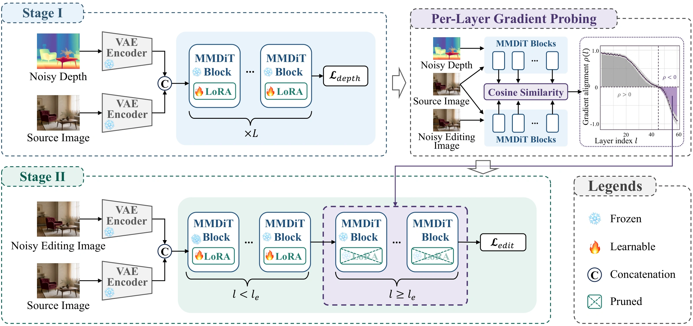

NeurIPS 2026
StitchEdit
Stitching Depth Priors into Image Editors
via Per-Layer Gradient Probing
The Hong Kong University of Science and Technology
† Corresponding author

StitchEdit transfers a diffusion model’s depth priors to spatial image editing
through per-layer gradient probing and selective fine-tuning.
Abstract
Text-guided image editing with diffusion models struggles with spatial edits (e.g. manipulating objects, changing viewpoints, manipulating occlusions) that depend on the 3D structure understanding of a scene. Marigold and follow-up work demonstrate that a pretrained diffusion backbone already harbors strong geometric priors that can be activated for depth estimation, yet how to redirect these priors toward editing remains unresolved. Through per-layer gradient probing, we discover that the editing and depth objectives are compatible in early transformer layers but actively conflict in late layers, explaining why naive depth-conditioned editing either ignores geometry or degrades visual quality. We present StitchEdit, which first activates the backbone's geometric capability via a lightweight depth-denoising adapter, then selectively fine-tunes this adapter for editing using a probe-guided per-layer learning rate schedule that preserves depth knowledge where it helps and prunes it where it conflicts. On the proposed StitchEditBench, a benchmark of 150 geometry-dependent edits spanning spatial transformation, occlusion manipulation, and viewpoint change, StitchEdit consistently surpasses both instruction-based and depth-conditioned baselines on perceptual quality and geometric fidelity.
Qualitative Results
Spatial transformations, occlusion manipulation, viewpoint changes, and compound edits.
Select any image to view it at full resolution.


Methodology

StitchEdit first activates the backbone’s geometric capability with a lightweight depth-denoising adapter. Per-layer gradient probing then measures the compatibility between depth and editing objectives: early layers cooperate, while late layers conflict. The probing profile guides both the per-layer learning-rate schedule and the pruning of conflicting adapters during editing fine-tuning.
Quantitative Results
Main results on StitchEditBench (150 test cases), as reported in Table 1 of the paper.
Scroll horizontally to view all metrics →
| Method | LPIPS ↓ | DCS ↑ | CLIP-Dir ↑ | User Pref. ↑ |
|---|---|---|---|---|
| Nano-Banana | 0.13 | 0.74 | 0.78 | 16% |
| Qwen-Image-Edit | 0.14 | 0.71 | 0.76 | 14% |
| Uniform FT | 0.14 | 0.80 | 0.76 | 12% |
| StitchEdit (Ours) | 0.10 | 0.92 | 0.81 | 58% |
BibTeX
@inproceedings{guo2026stitchedit,
title={StitchEdit: Stitching Depth Priors into Image Editors
via Per-Layer Gradient Probing},
author={Guo, Qin and Xu, Dan},
booktitle={Advances in Neural Information Processing Systems},
year={2026},
url={https://openreview.net/forum?id=Q7G74v5nSs}
}